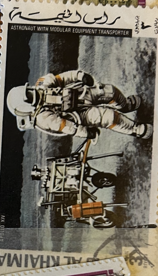
| SOURCE | TITLE| IMAGE MATCH | click to source page |
| eBay | Ras al Khaima ~ Astronaut w/Modular Equip Transporter ~ 3¢ Air Mail Stamp ~ UAE | eBay | 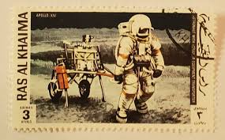 |
| Dreamstime.com | Old Post Stamp of Ras Al Haima Editorial Photo - Image of oman, space: 111492711 |  |
| eBay | Space Postage United Arab Emirates Stamps for sale | eBay | 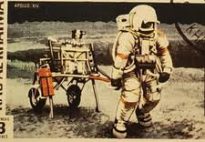 |
| Dreamstime.com | Old Post Stamp of Ras Al Haima Editorial Photo - Image of postmark, middle: 111492671 |  |
| Dreamstime.com | Postage Stamp Printed in Ras Al Khaimah Shows Astronaut with Transporter, Apollo 14 Serie, Circa 1972 Editorial Stock Image - Image of astronaut, holland: 167461919 |  |
| Group Rules: 1. Evidence or GTFO: Posts advocating for Flat Earth or pseudoscientific nonsense will be removed and may lead to being banned 2. No Spam: advertising a product or service is | 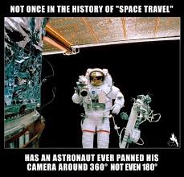 | |
| Dreamstime.com | 1,073 Stamp Emirates Stock Photos - Free & Royalty-Free Stock Photos from Dreamstime - Page 6 |  |
| RR Auction | Apollo 11 Signed Foil Etching | RR Auction | 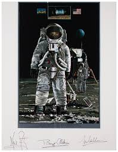 |
| Apollo 12 astronaut Alan Bean's "The Hammer and the Feather." : r/hardimages2 | 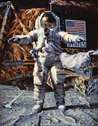 | |
| eBay | Man On The Moon Collector's Edition July 20 1969 Magazine RARE POSTER | eBay | 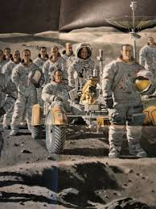 |
| persimmonalleypress.com | Persimmon Alley Press - Smoke the Dottle | 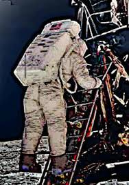 |
| National Institutes of Health (.gov) | 2015 is Almost History – Circulating Now from the NLM Historical Collections | 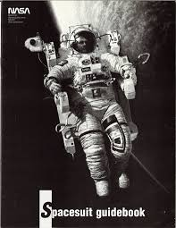 |
| Both scopes came out at the same time but I got the dwarf2 end of 2023 and the leestar end of 2024 | 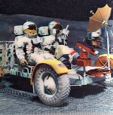 | |
| 美华史记 | Historical Record of Chinese Americans | Tang Xinyuan, Chinese American Astronautical Engineer | 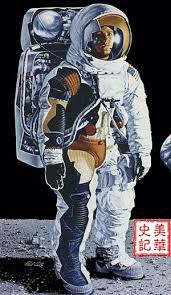 |
| Etsy | Vintage 1970s Space Scene Cotton Fabric: Astronaut Pattern (45"x58") Invam - Etsy | 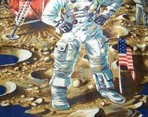 |
| WorthPoint | Rare Apollo XI (11) Metallic Foil Etched Print "ONE GIANT LEAP" by John Berkey | #1923444013 | 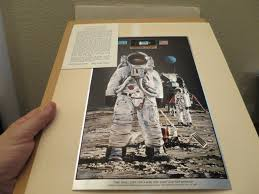 |
| Popular Science | Neil Armstrong In The Pages Of Popular Science | 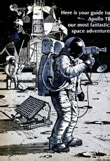 |
| Amazon.com | Amazon.com: Magnet We are All Stardust Magnetic Bumper Sticker 5" : Automotive | 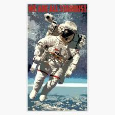 |
| NASA (.gov) | Russ Arasmith Apollo Artwork - NASA | 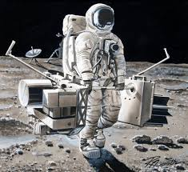 |
| WorthPoint | Vintage "One Giant Leap" Apollo Landing~John Berkey Foil Litho | #3778680813 | 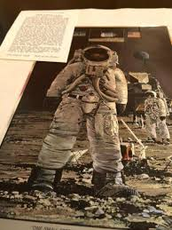 |
| Federal University of Agriculture, Abeokuta | 1981 ORIGINAL SOVIET Russian POSTER Cosmonaut USSR space astronaut rocket – FUNAAB Zoo Park | 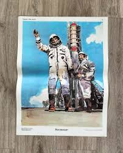 |
| University of Mississippi | Ole Miss | ASTR 101 - Day 10 | 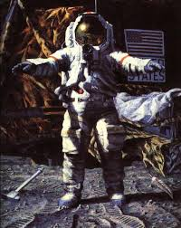 |
| eBay | New Hypebeast Designer Astronaut T-Shirt | eBay | 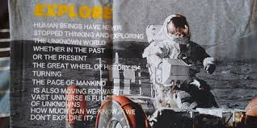 |
| Science Source | Shuttle Astronaut On Remote Manipulator Round Beach Towel by Nasa - Science Source Prints | 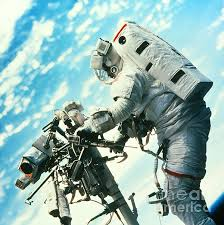 |
| Chron | The story behind the 'fireflies' that astronaut John Glenn saw in space |  |
| eBay | VERTEX THE MAGAZINE OF SCIENCE FICTION AUGUST 1973 ISSUE #3 NEW LARRY NIVEN | eBay | 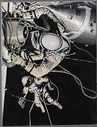 |
| Invaluable.com | Sold at Auction: Paul Calle, Paul Calle Signed Framed Stamp Display | 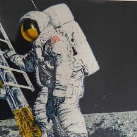 |
| eBay | 1973 Vertex Magazine Volume 1 Issue 3 | eBay | 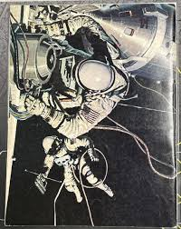 |
| eBay | One Giant Leap" Etched Foil Print John Berkey Neil Armstrong Moon Landing 1969 | eBay | 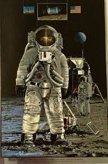 |
| Project Apollo featuring the Lunar Roving Vehicle Screen Print Design: Completed! : r/space | 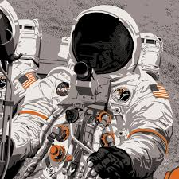 | |
| eBay | 1979 Moon Landing Paul Calle Signed Commemorative Lithograph with USPS Stamps | eBay | 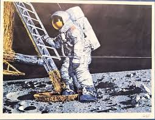 |
| eBay | 1991 Space Shots Moon Mars Action Packed YOU PICK | eBay | 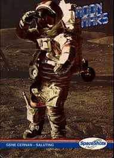 |
| Swann Auction Galleries | Lot - (ASTRONAUTS.) Poster Signed, by the three Apollo XI astronauts: Neil Armstrong, Buzz Aldrin, and Michael Collins, | 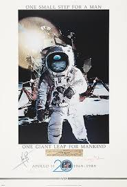 |
| The University of Queensland | Tension and Tranquillity | 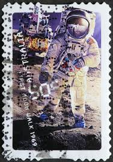 |
| Today In Science History ® | August 5 - Today in Science History - Scientists born on August 5th, died, and events | 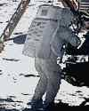 |
| Science Source | Shuttle Astronaut On Remote Manipulator Canvas Print by Nasa - Science Source Prints | 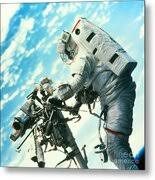 |
| Custom Phones - Fun Home Products Antique Picture Frame Front Wood Wall Phone | 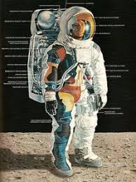 | |
| eBay | MAN ON THE MOON JULY 20, 1969 A. D. COLLECTORS... | eBay | 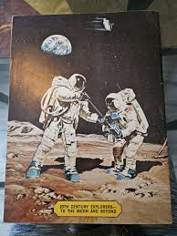 |
| EJ'S Auction & Appraisal | Lot - Richard American Homes Man On The Moon Pop Print | 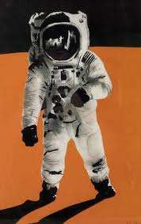 |
| RR Auction | 3449100_1.jpg?w=380 | 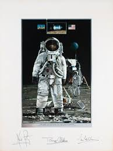 |
| eBay | TEXAS WARE 1969 Collins Armstrong Aldrin Space Moon Landing Collectors plate | eBay | 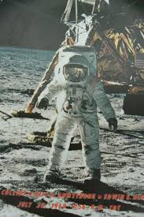 |
| Nextdoor | Game Of Thrones Book Series For $25 In Twin Falls, ID | For Sale & Free — Nextdoor | 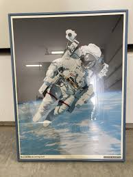 |
| Old postcards | Gemini – IV spacewalk, astronaut Edward H Whyte the second Space Postcard | OldPostcards.com |  |
| Paul Fraser Collectibles | Moonwalkers (PF70) a complete set of al 12 Moonwalker signatures | 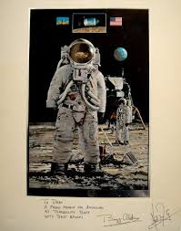 |
| NASA (.gov) | Robert T. McCall | 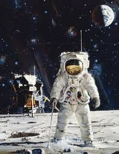 |
| eBay | Ras al Khaima ~ APOLLO XV/Scott & Irwin w/Roving Vehicle ~ 1.5¢ Stamp ~ UAE | eBay | 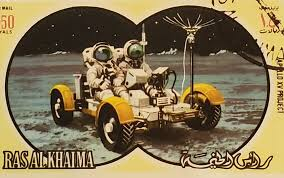 |
| eBay | Jb12 Space Shots 1990 1992 Series 3 #0245 Saviyskaya 1st Female Eva | eBay | 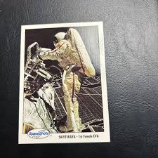 |
| eBay | 1969, "MAN ON THE MOON", Magazine (Scarce / Vintage) No Label Excellent Shape!! | eBay | 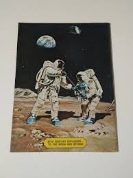 |
| Granger - Historical Picture Archive | Image Search - Spacesuit - Granger - Historical Picture Archive | 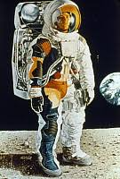 |
| askART | Jim Butcher Auction Records & Pricing | askART | 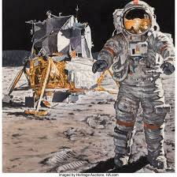 |
| eBay | 1989 USPS Post Office Stamp Block Poster - Aviation & Space - 36 x 24” - RARE! | eBay | 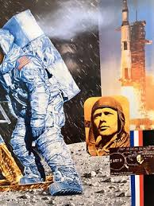 |
| NASA (.gov) | Extra-Vehicular Activity I I I I 1 I I I I I I I I I I I I I I NASA | 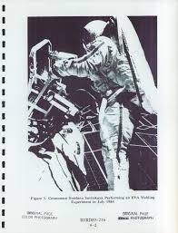 |
| Redbubble | Cuaderno for Sale con la obra «Primer hombre en la Luna 10 centavos US Postage Stamp, Apollo 11, Neil Armstrong, aterrizaje lunar, julio de 1969, traje espacial,» de Nostrathomas66 | Redbubble | 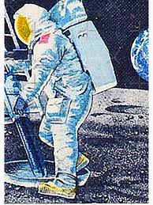 |
| LiveAuctioneers | Apollo 11 Autographed Display All 3 | 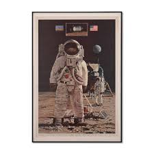 |
| Science Source | Ed White First American Spacewalker Spiral Notebook by Nasa - Science Source Prints | 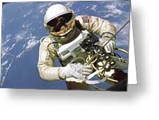 |
| The A7L Apollo Spacesuit [1500x2000] : r/ThingsCutInHalfPorn | ||
| Threads | Apollo 17, 2024 Oil on linen / 100 x 80 inches #apolloprogram #michaelkagan | |
| eBay | Vintage 1970s NASA Material - Book Brochure Photos | |
| National Geographic - February 1969 - Lunar Pioneers Dig In On The Moon by Davis Meltzer |